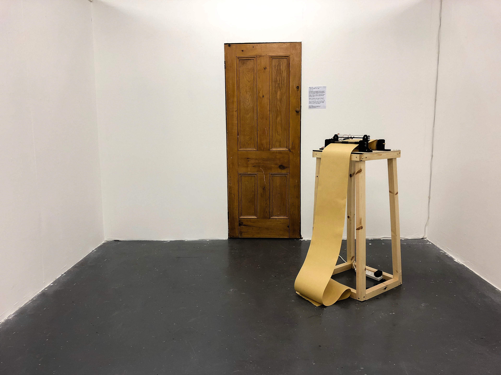

LIVING SCROLL
2018
As human beings, rarely do we realise the life that we live, as we live it. In real time, this interactive piece is an organic documentation of the exhibiting community through a collection of self realisations. As individuals we leave a mark in this world and live as a whole. Just as in this collective interaction, the participants’ hearts create the precarious physical identity that is the Living Scroll.
